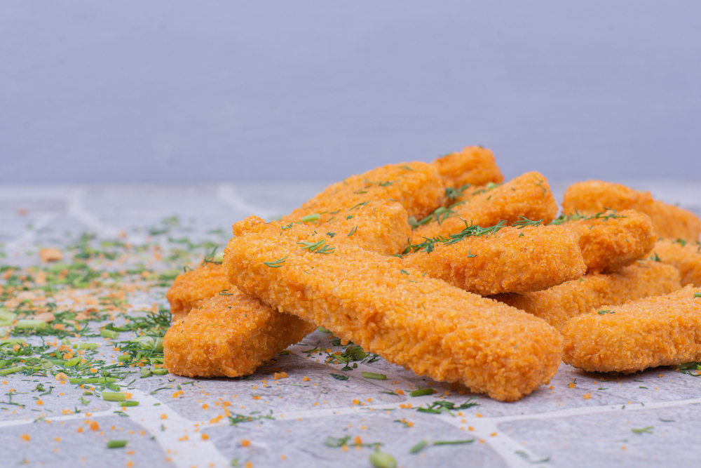

Breaded chicken fingers

Image by azerbaijan_stockers on Freepik
Description
This chicken fingers recipe is for you if you like the taste of garlic. It is easy to make but requires time to marinate.
The chicken is tender and juicy on the inside with a crispy coating on the outside. Perfect for a snack or a main dish served with fries and a dipping sauce of your choice.
Ingredients
- 6 skinless, boneless chicken breast halves - cut into 1/2 inch strips
- 1 egg, beaten
- 1 cup buttermilk
- 1 1/2 teaspoons garlic powder
- 1 cup all-purpose flour
- 1 cup seasoned bread crumbs
- 1 teaspoon baking powder
- 1 teaspoon salt
- 1 quart oil for frying
Steps
- Place chicken strips into a large, resealable plastic bag. Mix egg, buttermilk, and garlic powder in a small bowl. Pour mixture into the bag with chicken. Seal and refrigerate for 2 to 4 hours.
- Mix together flour, bread crumbs, baking powder, and salt in another large, resealable plastic bag.
- Remove chicken from the refrigerator; drain and discard buttermilk mixture. Place chicken in the bag with flour mixture; seal, then shake to coat.
- Heat oil in a large, heavy skillet to 375 degrees F (190 degrees C).
- Carefully place coated chicken into the skillet. Fry in hot oil until golden brown and juices run clear. Transfer chicken to a paper towel-lined plate to drain. An instant-read thermometer inserted into the center should read at least 165 degrees F (74 degrees C).
Home